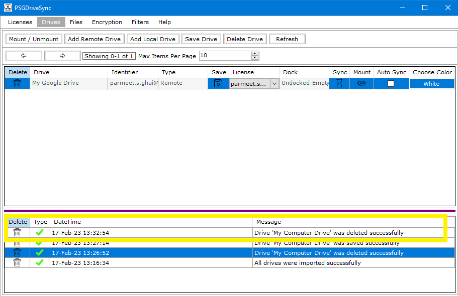

Both local drives and remote drives can be deleted anytime however doing so will cause the drive to not be accessible inside the application. You can still access the drive content from your computer if its a local drive or from google drive home page if its a remote drive. On top of that you can always add the drive back in the application to make it accessible from within the application one more time. Following are the steps needed to be followed in order to delete a drive
|
1 |
Select the drive that you would like to delete and then you can do any one of the following
|
|
|
2 |
You may also go ahead and take a look at the system messages to make sure that drive has been successfully deleted. |
 |